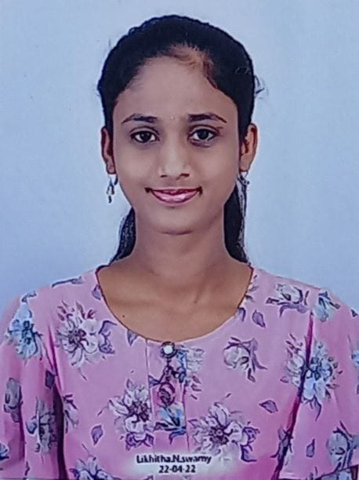

LIKHITHA N SWAMY
Address: G-02, Sai Brundavana Apartment, Kitaganur main road, Bangalore-560049
Email: lisw22cs@cmrit.ac.in
Mobile No: +91 9341780066
LinkedIn: linkedin.com/in/likhitha
GitHub: github.com/likhitha

CARRER OBJECTIVE
To secure a challenging position in a reputable organization to expand my learning, knowledge, and skills. I am passionate about leveraging my knowledge of computer science to contribute to the tech industry.
EDUCATIONAL QUALIFICATION
- BE in Computer Science and Engineering - CMRIT College (2022 - 2026)
- 12th Grade (PUC) - Sri Chaitanya Pre-University College (2021)
- 10th Grade (SSLC) - ST.Teresa's girls High School (2019)
TECHNICAL SKILLS
- Programming Languages: C, Python, Java, HTML, CSS, JavaScript
- Database Management: MySQL
- Tools: Visual Studio, Android Studio, XAMPP
- Soft Skills: Teamwork, Problem-solving, Time Management
PROJECTS
- Electricity Bill Management System: Built using HTML, CSS, JavaScript, PHP, and MySQL.
- Travel And Tourism Management System web-based application designed to manage and streamline booking, reservations, customer details, and tour packages for travel agencies.
- School Management System comprehensive platform that handles student enrollment, attendance, grades, timetables, and communication between students, teachers, and administrators.
INTERNSHIPS
- Software Development Intern: XYZ Company (June 2023 - August 2023) - Worked on web development and database management tasks.
- Data Science Intern: ABC Tech (May 2022 - July 2022) - Assisted in data cleaning, analysis, and visualizations.
CO-CURRICULAR ACTIVITIES AND EXTRA-CURRICULAR ACTIVITIES
Active participant in coding competitions, and tech-related workshops. Volunteered for various college events and seminars. Member of the college tech club.
ONLINE COURSES AND CERTIFICATIONS
- Certified Web Developer: Coursera
- Data Science Fundamentals: udemy
WORKSHOPS
- Cyber Security Workshop: Organized by Accubits (2023)
ACHIEVEMENTS
- Rewarded as a centum achiever for scoring full marks in maths external exam(2023)
- Certified in Web Development and Database Management.
PERSONAL DETAILS
Date of Birth: August 18, 2003
Gender: Female
Nationality: Indian
Linguistic Competency: English, Telugu, Kannada
Hobbies: Reading, Traveling